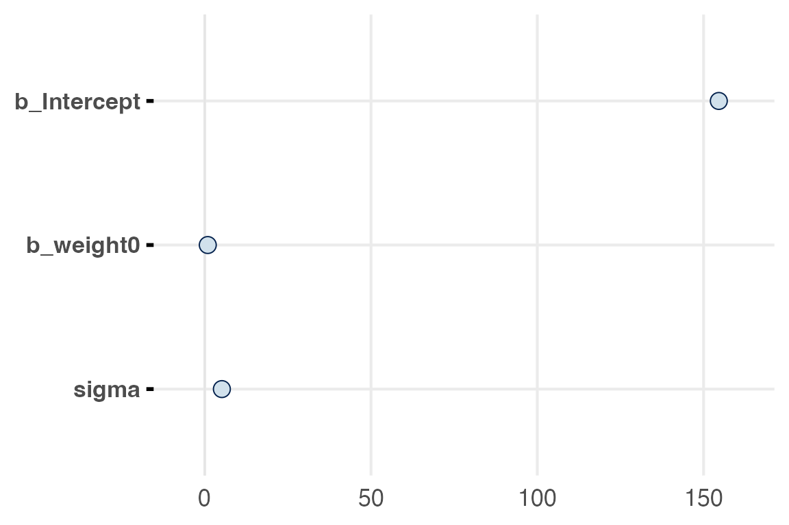
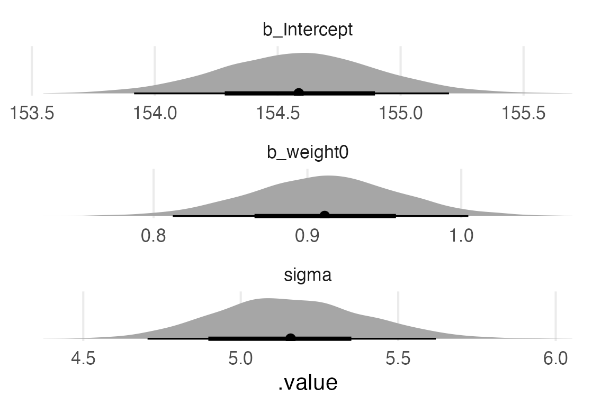

library(tidyverse)
library(tidybayes)
library(gt)
library(gtsummary)
library(brms)
library(marginaleffects)
library(broom.mixed)
source(here::here("_defaults.R"))
Listening
Loading
Table libraries
library(gtsummary)
library(stargazer)height_weight_mod <- read_rds(here::here("posts", "2023-06-14_09-reporting", "height_weight_mod.rds"))The goal
Try to get estimates from this brms model into a table, or some other kind of format, that I like:
height_weight_mod Family: gaussian
Links: mu = identity; sigma = identity
Formula: height ~ 1 + weight0
Data: height_to_mod (Number of observations: 251)
Draws: 4 chains, each with iter = 2000; warmup = 1000; thin = 1;
total post-warmup draws = 4000
Population-Level Effects:
Estimate Est.Error l-95% CI u-95% CI Rhat Bulk_ESS Tail_ESS
Intercept 154.59 0.32 153.93 155.22 1.00 4061 2653
weight0 0.91 0.05 0.81 1.01 1.00 3991 2705
Family Specific Parameters:
Estimate Est.Error l-95% CI u-95% CI Rhat Bulk_ESS Tail_ESS
sigma 5.16 0.24 4.72 5.64 1.00 4328 3175
Draws were sampled using sampling(NUTS). For each parameter, Bulk_ESS
and Tail_ESS are effective sample size measures, and Rhat is the potential
scale reduction factor on split chains (at convergence, Rhat = 1).Off-the-shelf table methods
{gtsummary} has a tbl_regression() function.
height_weight_mod |>
gtsummary::tbl_regression(
intercept = T
)| Characteristic | Beta | 95% CI1 |
|---|---|---|
| (Intercept) | 155 | 154, 155 |
| weight0 | 0.91 | 0.81, 1.0 |
| 1 CI = Credible Interval | ||
It’s ok.
I know {stargazer} is a package people use for reporting models.
data(penguins, package = "palmerpenguins")
penguin_mod <- lm(bill_length_mm ~ body_mass_g + species, penguins)stargazer::stargazer(penguin_mod, type = "html")| Dependent variable: | |
| bill_length_mm | |
| body_mass_g | 0.004*** |
| (0.0003) | |
| speciesChinstrap | 9.921*** |
| (0.351) | |
| speciesGentoo | 3.558*** |
| (0.486) | |
| Constant | 24.919*** |
| (1.063) | |
| Observations | 342 |
| R2 | 0.808 |
| Adjusted R2 | 0.806 |
| Residual Std. Error | 2.403 (df = 338) |
| F Statistic | 474.006*** (df = 3; 338) |
| Note: | p<0.1; p<0.05; p<0.01 |
To be quite honest, I’m not a big fan of this giant table of everything & asterisks, and it looks like it’s not implemented for brms models anyway.
stargazer::stargazer(height_weight_mod)
% Error: Unrecognized object type.Oh well.
Graphical summary methods
There’s a few challenges for visualizing this particular model given that the intercept is on such a different scale from the rest of the parameters.
mcmc_plot(height_weight_mod)
height_weight_mod |>
gather_draws(
`b_.*`,
sigma,
regex = TRUE
) |>
ggplot(aes(.value))+
stat_slabinterval(
normalize = "panels",
point_interval = "mean_hdi"
)+
facet_wrap(~.variable, scales = "free", ncol = 1)+
theme_no_y()
Custom table
I want a custom {gt} table that captures the distributional nature of the posteriors. That’ll involve calculating things like the credible intervals “by-hand” (really, using tidybayes::mean_hdci() and doing some reshaping before the monster {gt} code.
Getting parameter draws
I’ll grab the parameter draws with gather_draws()
height_weight_mod |>
gather_draws(
`b_.*`,
sigma,
regex = T
) -> parameter_drawsGetting the parameter summaries
I’ll get the posterior mean and 95% & 50% hdci right now, which results in a long table.
parameter_draws |>
group_by(.variable) |>
mean_hdci(.value, .width = c(0.95, 0.5)) ->
initial_table_long
initial_table_long# A tibble: 6 × 7
.variable .value .lower .upper .width .point .interval
<chr> <dbl> <dbl> <dbl> <dbl> <chr> <chr>
1 b_Intercept 155. 154. 155. 0.95 mean hdci
2 b_weight0 0.911 0.812 1.00 0.95 mean hdci
3 sigma 5.16 4.70 5.62 0.95 mean hdci
4 b_Intercept 155. 154. 155. 0.5 mean hdci
5 b_weight0 0.911 0.881 0.944 0.5 mean hdci
6 sigma 5.16 4.98 5.29 0.5 mean hdci Long to wide
What I have right now is a table like
| .variable | .lower | .upper | .width |
| intercept | ...... | ...... | 0.5 |
| intercept | ...... | ...... | 0.95 | What for my final table will be something like
| .variable | lower_95 | lower_50 | upper_50 | upper_95 |
| intercept | ........ | ........ | ........ | ........ |So, getting from here to there will involve some pivoting
initial_table_long |>
pivot_longer(
.lower:.upper,
names_to = "side",
values_to = "side_value"
) |>
unite(
col = "side",
c(side, .width)
) |>
pivot_wider(
names_from = side,
values_from = side_value
) |>
relocate(
ends_with("_0.5"),
.after = .lower_0.95
) |>
select(-.point, -.interval) ->
initial_table_wide
initial_table_wide# A tibble: 3 × 6
.variable .value .lower_0.95 .lower_0.5 .upper_0.5 .upper_0.95
<chr> <dbl> <dbl> <dbl> <dbl> <dbl>
1 b_Intercept 155. 154. 154. 155. 155.
2 b_weight0 0.911 0.812 0.881 0.944 1.00
3 sigma 5.16 4.70 4.98 5.29 5.62Posterior sd
I also want to grab the posterior standard deviation, maybe just cause I’m old fashioned, I’ll have to calculate that back with the original posterior draws and then join it onto the table I’m making.
parameter_draws |>
group_by(.variable) |>
summarise(
posterior_sd = sd(.value)
) ->
posterior_sd
posterior_sd# A tibble: 3 × 2
.variable posterior_sd
<chr> <dbl>
1 b_Intercept 0.324
2 b_weight0 0.0488
3 sigma 0.237 initial_table_wide |>
left_join(posterior_sd) |>
relocate(
posterior_sd,
.after = .value
) ->
final_report_table
final_report_table# A tibble: 3 × 7
.variable .value posterior_sd .lower_0.95 .lower_0.5 .upper_0.5 .upper_0.95
<chr> <dbl> <dbl> <dbl> <dbl> <dbl> <dbl>
1 b_Intercept 155. 0.324 154. 154. 155. 155.
2 b_weight0 0.911 0.0488 0.812 0.881 0.944 1.00
3 sigma 5.16 0.237 4.70 4.98 5.29 5.62The {gt} code
One last bit of clean up will be to the variable names, and creating a group column so I can separate the intercept and weight parameters from the variance parameter.
final_report_table |>
ungroup() |>
mutate(
group = case_when(
str_detect(.variable, "b_") ~ "β",
.default = "variance"
),
.variable = str_remove(.variable, "b_")
) |>
group_by(group) ->
for_gt
for_gt |>
gt()->
gt_interim_01
gt_interim_01| .variable | .value | posterior_sd | .lower_0.95 | .lower_0.5 | .upper_0.5 | .upper_0.95 |
|---|---|---|---|---|---|---|
| β | ||||||
| Intercept | 154.5857634 | 0.32423855 | 153.9159103 | 154.3976375 | 154.8290184 | 155.196791 |
| weight0 | 0.9112191 | 0.04884185 | 0.8124778 | 0.8805526 | 0.9442994 | 1.004583 |
| variance | ||||||
| sigma | 5.1583113 | 0.23732630 | 4.7040727 | 4.9795864 | 5.2942085 | 5.619339 |
That’s too many decimal places.
gt_interim_01 |>
fmt_number(decimals = 2) ->
gt_interim_02
gt_interim_02| .variable | .value | posterior_sd | .lower_0.95 | .lower_0.5 | .upper_0.5 | .upper_0.95 |
|---|---|---|---|---|---|---|
| β | ||||||
| Intercept | 154.59 | 0.32 | 153.92 | 154.40 | 154.83 | 155.20 |
| weight0 | 0.91 | 0.05 | 0.81 | 0.88 | 0.94 | 1.00 |
| variance | ||||||
| sigma | 5.16 | 0.24 | 4.70 | 4.98 | 5.29 | 5.62 |
Next, I’ll add spanners for the credible intervals, and point estimates.
gt_interim_02 |>
tab_spanner(
label = "50% HDI",
columns = .lower_0.5:.upper_0.5
) |>
tab_spanner(
label = "95% HDI",
columns = .lower_0.95:.upper_0.95
) |>
tab_spanner(
label = "posterior estimates",
columns = c(.value, posterior_sd)
) ->
gt_interim_03
gt_interim_03| 95% HDI | ||||||
|---|---|---|---|---|---|---|
| .variable | posterior estimates | .lower_0.95 | 50% HDI | .upper_0.95 | ||
| .value | posterior_sd | .lower_0.5 | .upper_0.5 | |||
| β | ||||||
| Intercept | 154.59 | 0.32 | 153.92 | 154.40 | 154.83 | 155.20 |
| weight0 | 0.91 | 0.05 | 0.81 | 0.88 | 0.94 | 1.00 |
| variance | ||||||
| sigma | 5.16 | 0.24 | 4.70 | 4.98 | 5.29 | 5.62 |
With the spanners in place, we can adjust the actual column labels.
gt_interim_03 |>
cols_label(
.variable = md("**parameter**"),
.value = md("**mean**"),
posterior_sd = md("**sd**"),
.lower_0.95:.upper_0.95 ~ ""
)->
gt_interim_04
gt_interim_04| 95% HDI | ||||||
|---|---|---|---|---|---|---|
| parameter | posterior estimates | 50% HDI | ||||
| mean | sd | |||||
| β | ||||||
| Intercept | 154.59 | 0.32 | 153.92 | 154.40 | 154.83 | 155.20 |
| weight0 | 0.91 | 0.05 | 0.81 | 0.88 | 0.94 | 1.00 |
| variance | ||||||
| sigma | 5.16 | 0.24 | 4.70 | 4.98 | 5.29 | 5.62 |
Now, to add some visual clarity to the credible intervals. I’ll fill with ptol_blue, (hex code #4477aa).
gt_interim_04 |>
tab_style(
style = cell_fill(
color = ptol_blue,
alpha = 0.5
),
locations = cells_body(
columns = ends_with("_0.5")
)
) |>
tab_style(
style = cell_fill(
color = ptol_blue,
alpha = 0.2
),
locations = cells_body(
columns = ends_with("_0.95")
)
)->
gt_interim_05
gt_interim_05| 95% HDI | ||||||
|---|---|---|---|---|---|---|
| parameter | posterior estimates | 50% HDI | ||||
| mean | sd | |||||
| β | ||||||
| Intercept | 154.59 | 0.32 | 153.92 | 154.40 | 154.83 | 155.20 |
| weight0 | 0.91 | 0.05 | 0.81 | 0.88 | 0.94 | 1.00 |
| variance | ||||||
| sigma | 5.16 | 0.24 | 4.70 | 4.98 | 5.29 | 5.62 |
For me, the group labels are too visually similar to the names of parameter values, so I’ll style those too.
gt_interim_05 |>
tab_style(
style = cell_text(
style = "italic",
size = "small"
),
locations = cells_row_groups()
) ->
gt_interim_06
gt_interim_06| 95% HDI | ||||||
|---|---|---|---|---|---|---|
| parameter | posterior estimates | 50% HDI | ||||
| mean | sd | |||||
| β | ||||||
| Intercept | 154.59 | 0.32 | 153.92 | 154.40 | 154.83 | 155.20 |
| weight0 | 0.91 | 0.05 | 0.81 | 0.88 | 0.94 | 1.00 |
| variance | ||||||
| sigma | 5.16 | 0.24 | 4.70 | 4.98 | 5.29 | 5.62 |
Final steps, just adding some header and footer information
gt_interim_06 |>
tab_header(
title = "height ~ weight0"
) |>
tab_source_note(
source_note = md("**priors:**<br>intercept ˜ N(178, 20)<br>β ˜ N(0,10)<br>σ ˜ U(0,50)")
)->
final_gt_table
final_gt_table| height ~ weight0 | ||||||
| 95% HDI | ||||||
|---|---|---|---|---|---|---|
| parameter | posterior estimates | 50% HDI | ||||
| mean | sd | |||||
| β | ||||||
| Intercept | 154.59 | 0.32 | 153.92 | 154.40 | 154.83 | 155.20 |
| weight0 | 0.91 | 0.05 | 0.81 | 0.88 | 0.94 | 1.00 |
| variance | ||||||
| sigma | 5.16 | 0.24 | 4.70 | 4.98 | 5.29 | 5.62 |
| priors: intercept ˜ N(178, 20) β ˜ N(0,10) σ ˜ U(0,50) |
||||||
I’ll just save this table as a png to be the post image.
gtsave(final_gt_table, filename = "final_gt_table.png")Was it worth it?
That was a lot of fuss, but a lot of those steps I might roll into my own functions for an actual paper.